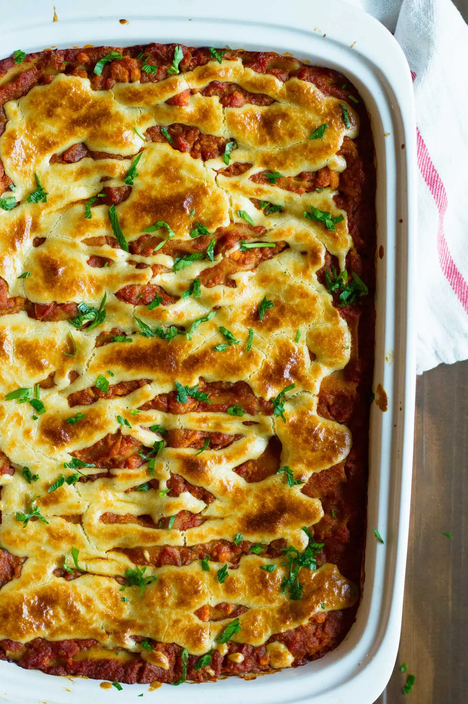

~Odin Vegan Recipes~
Home
The Best Damn Vegan Lasagna

Vegan Lasagna
This protein packed vegan lasagna will knock your socks off.
Make it with or without ground 'beef' the tart tomato sauce
made with lentils make for a hearty dish. If your a 'cheese'
lover, you'll love the spinach ricotta and may have some
leftover to use on other dishes. I love it on bagles! A small
kick of the creamy cashew sauce on top will be the final touch
beatuiful presentation for your guests to enjoy. Lasagna is an
dish for everyone, both to make and eat. Vegans and Non-vegans
can't resist a good pasta dish regardless of its protein type.
Buidling the Masterpiece
- 1/2 cup Savory Cashew Cream (lets make it together!)
- 4 cups Marinara Sauce (lets make it together!)
- 2 cups Spinach Ricotta (lets make it together!)
- Pasta! (lets make it together!)
Shopping List
- 1 1/2 cups raw cashews
- 2 tbls + 1 tsp nutritional yeast
- 1 1/4 tsp miso (white, yellow, or chickpea)
- 2 1/4 tsp salt
- 1 tsp apple cider vinegar
- 2 28oz cans crushed tomatoes
- 1/2 cup red lentils, picked over and rinsed
- 4-5-200 cloves of garlic (I.LOVE.GARLIC)
- 2 3/4 cups water